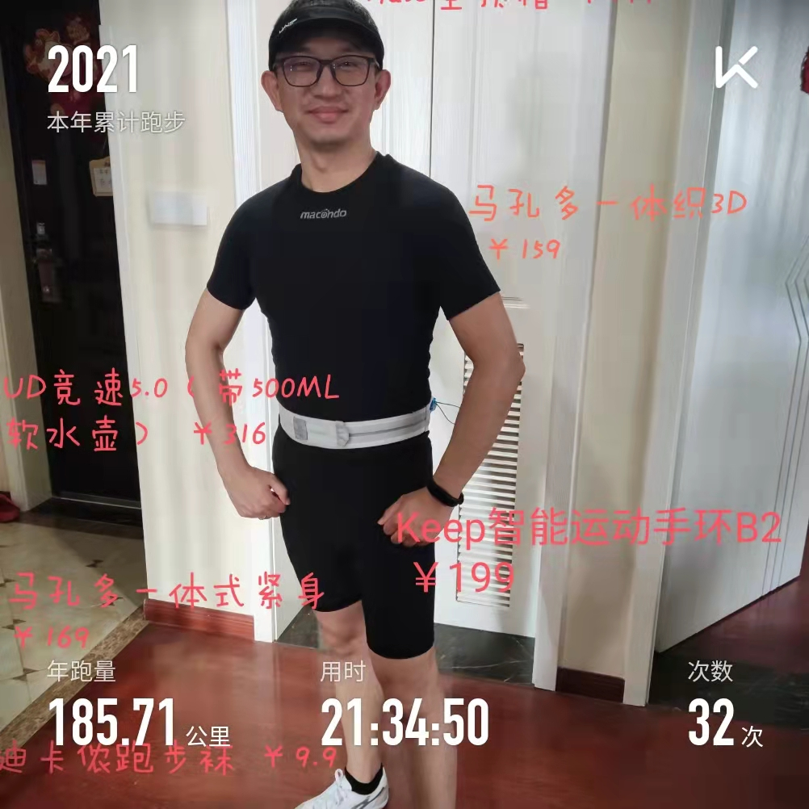

<!DOCTYPE HTML>
<html>
<head><meta name="generator" content="Hexo 3.9.0">
  <meta charset="utf-8">
  <meta http-equiv="X-UA-Compatible" content="IE=edge">
  <meta name="apple-mobile-web-app-capable" content="yes">
  <meta name="apple-mobile-web-app-status-bar-style" content="black">
  <meta name="google-site-verification" content>
  
  <title>告别2021，清零2022</title>
  <meta name="author" content="Emac">
   <meta name="description" content="所谓清零思维，就是说职场人每过两年，都要对自己做一次清零，以对自己在市场中的“估值”，有一个清醒的认识。
– 老K

System.in.read()Books
《银行数字化转型》- 付晓岩

Columns
&amp;lt;软件设计之美&amp;gt; - 郑晔
&amp;lt;技术管理实战 36 讲&amp;gt; - 刘建国">
  

  <meta property="og:title" content="告别2021，清零2022">
  <meta name="viewport" content="width=device-width, initial-scale=1, maximum-scale=1">
  <meta property="og:site_name" content="Emac">
 <meta property="og:image" content="undefined">
  
  <link href="/apple-touch-icon-precomposed.png" sizes="180x180" rel="apple-touch-icon-precomposed">
  <link rel="alternate" href="/atom.xml" title="Emac" type="application/atom+xml">
  <link rel="stylesheet" href="//cdn.bootcss.com/bootstrap/3.3.6/css/bootstrap.min.css">
  <link rel="stylesheet" href="//cdn.bootcss.com/font-awesome/4.5.0/css/font-awesome.min.css">
  <link rel="stylesheet" href="/css/m.min.css">
  <link rel="icon" type="image/x-icon" href="/favicon.ico">
</head>
</html>
<body>
  <div id='wx_pic' style='display:none;'></div>
  <div id="main">
    <div class="behind">
      <div class="back">
        <a href="/" class="black-color"><i class="fa fa-times" aria-hidden="true"></i></a>
      </div>
      <div class="description">
        &nbsp;拾贝
      </div>
    </div>
    <div class="container">
      

  <article class="standard post">
    <div class="title">
      
  
    <h1 class="page-title center">
        告别2021，清零2022
    </h1>
  


    </div>
    <div class="meta center">
      
<time datetime="2021-12-24T16:00:00.000Z">
  <i class="fa fa-calendar"></i>&nbsp;
  2021-12-25
</time>


    
    &nbsp;
    <i class="fa fa-tag"></i>&nbsp;
    <a href="/categories/notes/">notes</a>


    
    &nbsp;
    <i class="fa fa-tag"></i>&nbsp;
    <a href="/tags/原创/">原创</a>


    </div>
    <hr>
    <div class="picture-container">
      
    </div>
    <blockquote>
<p>所谓清零思维，就是说职场人每过两年，都要对自己做一次清零，以对自己在市场中的“估值”，有一个清醒的认识。</p>
<p>– 老K</p>
</blockquote>
<h1 id="System-in-read"><a href="#System-in-read" class="headerlink" title="System.in.read()"></a>System.in.read()</h1><h2 id="Books"><a href="#Books" class="headerlink" title="Books"></a>Books</h2><ul>
<li><a href="http://e.dangdang.com/products/1901208652.html" target="_blank" rel="noopener">《银行数字化转型》- 付晓岩</a></li>
</ul>
<h2 id="Columns"><a href="#Columns" class="headerlink" title="Columns"></a>Columns</h2><ul>
<li><a href="https://time.geekbang.org/column/intro/313?tab=catalog" target="_blank" rel="noopener">&lt;软件设计之美&gt; - 郑晔</a></li>
<li><a href="https://time.geekbang.org/column/intro/113?tab=catalog" target="_blank" rel="noopener">&lt;技术管理实战 36 讲&gt; - 刘建国</a></li>
<li><a href="https://time.geekbang.org/column/intro/100017301?tab=catalog" target="_blank" rel="noopener">&lt;数据结构与算法之美&gt; - 王争</a></li>
<li><a href="https://time.geekbang.org/column/intro/100076501?tab=catalog" target="_blank" rel="noopener">&lt;说透数字化转型&gt; - 付晓岩</a></li>
<li><a href="https://time.geekbang.org/column/intro/100012001?tab=catalog" target="_blank" rel="noopener">&lt;邱岳的产品实战&gt; - 邱岳</a></li>
</ul>
<h1 id="System-out-print"><a href="#System-out-print" class="headerlink" title="System.out.print()"></a>System.out.print()</h1><h2 id="PPT"><a href="#PPT" class="headerlink" title="PPT"></a>PPT</h2><ul>
<li><a href="https://slides.com/emacooshen/confucius" target="_blank" rel="noopener">穿越时空的对话：《论语》中的管理智慧 (一)</a></li>
<li><a href="https://slides.com/emacooshen/xxl-job" target="_blank" rel="noopener">XXL-JOB 原理浅析</a></li>
<li><a href="https://slides.com/emacooshen/lifelong-learning" target="_blank" rel="noopener">穿越时空的对话：像孔子一样终身学习</a></li>
<li><a href="https://slides.com/emacooshen/x10" target="_blank" rel="noopener">10x 程序员工作法极简笔记</a></li>
<li><a href="https://docs.google.com/presentation/d/1Kgryi2z65PKQdZ7LanZHFPApUaWcFSLyx_X0v4dQmVU/edit?usp=sharing" target="_blank" rel="noopener">如何做好组织协同</a></li>
</ul>
<h2 id="Blog"><a href="#Blog" class="headerlink" title="Blog"></a>Blog</h2><p>（惭愧）</p>
<h2 id="Run"><a href="#Run" class="headerlink" title="Run"></a>Run</h2><p></p>


  </article>
  </script>


    </div>
  </div>
  <footer class="page-footer"><div class="clearfix">
</div>
<div class="right-foot container">
    <div class="firstrow">
        <a href="#top" >
        <i class="fa fa-arrow-right"></i>
        </a>
        © emacoo.cn 2015-2024
    </div>
    <div class="secondrow">
        <a href="https://github.com/gaoryrt/hexo-theme-pln">
        
        </a>
    </div>
</div>
<div class="clearfix">
</div>
<script async src="//busuanzi.ibruce.info/busuanzi/2.3/busuanzi.pure.mini.js"></script>
<div class="busuanzi center">
    <span id="busuanzi_container_site_pv">本站总访问量<span id="busuanzi_value_site_pv"></span>次</span>
    <span id="busuanzi_container_site_uv">本站访客数<span id="busuanzi_value_site_uv"></span>人次</span>
    <span id="busuanzi_container_page_pv">
      本文总阅读量<span id="busuanzi_value_page_pv"></span>次
    </span>
</div>
</footer>
  <script src="//cdn.bootcss.com/jquery/2.2.1/jquery.min.js"></script>
<script src="/js/search.js"></script>
<script type="text/javascript">

// comments below to disable loading animation
function revealOnScroll() {
  var scrolled = $(window).scrollTop();
  $(".excerpt, .index-title, .index-meta, p").each(function() {
    var current = $(this),
      height = $(window).outerHeight(),
      offsetTop = current.offset().top;
    (scrolled + height + 50 > offsetTop) ? current.addClass("animation"):'';
  });
}
$(window).on("scroll", revealOnScroll);
$(document).ready(revealOnScroll)

// disqus scripts


// dropdown scripts
$(".dropdown").click(function(event) {
  var current = $(this);
  event.stopPropagation();
  $(current).children(".dropdown-content")[($(current).children(".dropdown-content").hasClass("open"))?'removeClass':'addClass']("open")
});
$(document).click(function(){
    $(".dropdown-content").removeClass("open");
})

// back to top scripts
$("a[href='#top']").click(function() {
  $("html, body").animate({ scrollTop: 0 }, 500);
  return false;
});


var path = "/search.xml";
searchFunc(path, 'local-search-input', 'local-search-result');

</script>

</body>
</html>
